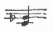

朝寒く、午後暖か。林町の人々は二日に常盤館に出かけるので今日ぜひ会いたかった。けれども風邪がなおり切らないので、Ａに電話をかけて貰って中止する。一日家居、「都会の憂鬱」をよんでしまう。
つづいて、「我が一九二二年」も。自分が忘れて居る、或は知らない日本、支那――東洋の芸術的雰囲気の美を感じ
らせられる。野上彌生氏からは忍耐や根気づよさをおそわり、佐藤春夫からは本当の芸術家の心はどうあるかと云うことを知らされ、自分の父に似すぎた性格の重しとなる。鷹野つぎ氏新聞で彌生氏の芸術は、classical すぎ、何の交感も自分に与えず。と批評して居る。一面の真理はある。自分が彼女との交誼の間に自ら警して居ることもその点だ。ヤエ子さんは段々、古典的形式美――精神がきっぱり簡明な手法に納められたもの――を愛す傾向になって居る。光太郎氏訳『ヴェルハーラン詩集』大正十年の訳で、やや生硬のうらみあり、然し美しい。さいと裏で羽根をつき乍ら、日本のうららかな正月は薄水色。そこに、葉のない梅やけやきの美しい枝が、金糸でぬいとったような風景。（西日に照って）と感じる。又卓子の上にあるアスパラガスを横から見ると、優しい繊細な緑のつみ重りの間に、小規範の南方的圧力があり面白いと思った。
（この日記は、紙がよくて書きよいが、小さくて困る。又大きすぎたら、こんなにこまごまと書く丹念さを失うかもしれないが。）
『文芸春秋』、なかなか面白し。茶目ども！ 佐佐木茂索のおしゃべり（短、小）は器用なものだ。少し wit がはばをきかせすぎるけれども。
（彌生さんのことを考える。私は彼女に対して、種々の批評をもって居るが、彼女が寛大に私を後進と扱ってくれるところ、彼女が私よりずっとよいところを持つと、思い、恥しいことがある。）
後進は、自己の道を見出す為に反抗的なのか。
今年の正月は、兄が来（Ａの）て居。家中は賑やかだ。けれども自分の心持は、まるで独りぼっちだ。――去年の秋頃から、Ａにすっかり自分の心持を云い、理解して貰う気も失ったので、彼等とは、只笑い、喋り、平凡な人間的交通を持つだけ。従って、――或は逆に私の芸術に食い込みかたが又深くなった――。
この頃、坪内先生に対する私の心持は苦しいものだ。私は先生の人となりにもいやなところを感じるし芸術にも感服出来ない。而も私の一身上深い関係を持って居る以上、年末とか年始とか日本の習慣の折り目になると、何か一種の義務を感じるのだ。
自分と先生とのいきさつ、寧ろ、私の先生に対するやや神経質な、然し先生の誠意と自分の受けたものの価値に対する自覚の心持には、書けるものがある。
私のわずらいになって居るのは、父の遺伝の常識的社交性だ。社会と自分と云うものの対立が画然として居ない。而して、内面に全然ダ協し切れないものがあるので、弱い苦しみかたをするのだ。現代多くの教養ある女性のように。徳川時代、下町のきかぬ気の女が芸者になったわけだ。現代の不良少女が出るわけだ。
〔欄外に〕この点、里見氏の不良青年に対する good will と共鳴するものあり。
Ａ、兄と三越に土産物買いに出かける。
本田の道ちゃん、三月に結婚して新居をかまえる。参考がてらと云って三十分ほど話して行く。新妻の親は、南條文雄。（文学博士？）「法城を護る人々」の中に出る本願寺の手下の博士かと思い、本田の性格と引きくらべ、一寸妙な然し、よく調和した俗さだと思った。白鳥氏、田中純の「襦袢」をほむ。自分と此那に観賞の傾向がちがうのかと驚いた。私は素直にかけて居ることは認めるが、ああ云うのが本性なのが、きたない、いやな気がするのだ。女性の petty moral か。
美術院の最終日。春江、国男を誘って行く。正月になってから始めての外出。大観の生々流転。
六日のつづき。（今度の日記は一日分たった三行と云うところがある。）
さすがに力の籠ったものであった。
最初の沢山の樹木、描きかた真実な心が見え、古雅な趣。中ほどの巖、ああ云う全体の筆法でゆけば、ああしか描けず又描くべからざるものであったかもしれないが少し角が同じ形すぎ、切り餅のジグザグ的。
やや里近い杉の山の彼方を水がとおり激流となって
溪にせきいかだを流して次第にひらき、水面広く河か湖と思われる辺、水ぎわの孤松、のどかに馬をひく馬子と老人、自分は見たことのない琵琶湖の一景を
髣髴とした。謡の文句、純日本の美のどかさが感じられた。その描写、ただ、水の波紋の次第に減らしてゆく丈、それで静かに大らかにたたえられた水のひろさと日の暖かさまで感じさせるのだから凡手でない。
やがて霧たち、ぽつりぽつり俄雨がかかって来、漁夫はせわしく網をひきあげる。雨脚はしげく、風をさそって大夕立烟り、ざっざっと降りしきる雨のうちに、一本、立木が寂しい。セキとして人なしの感。
それから
靄になり雲になり、やがて龍巻となって天上する。最後に、ひきしまった力の律動的な筆でなかなかよい。龍をはらんだ雲が定り通り巻きくるまって右にある。左に、さっと一抹の淡墨が、ひどく気魄にとんで居る。あの一はけがなかったら、さぞ物足りないだらけたものであったろう。ああ云う大切な、一筆は、前もって考えられて居たか、右の巻雲を、濃く重く
濛々と描いたなごりの力が、さっと一筆彼の処をかすったか。その間の芸術心のリズムが私には同感され、或刺戟を受けた。
北野恒富の女性、淡い白と銀のトーンで唇もさびた紅で現わされて居る。彼はそれで、そのゴーストリーな美でよいとしても、他の後進、人物と云うと、皆、その色調を模倣し、もっと下らないものにして居ること、あわれなり。
龍子 覇気満々。新機軸を出さんとして、美的感興の欠乏を露出す、と云いたい。
賭博者 龍子だからこそならべてくれるのではないか。
盗心 ルドンのように行こうとして行きそこね。
鶏の舞踊 意味なし。
胎臓 四つのうちではまあいい方。しかしあの鯉はなくてよし。男の子、誕生、と云うことにまかせたのなら風俗すぎる。もっと形のきまらない蠢動でよいではないか。
耕花 色彩にぐんとしたところがある。或諧調もある。然しおしいことには、紙の表面丈をぬった感じがある。もう少しぽっこり厚みがほしい。地を白いままで置いたのが原因と思う。淡い黄にでも描いたらと思った。
富田溪仙が、金地をつかってミニエチュア風の春日の舞姫を書いて居た。金ではいけない。つやのない黄。どこかでそんな絵を一つ見たいものだ。
総体、日本画が、どんなに新方面を開こうとして努力して居るかを示して居る。ためにまるで悪趣味なものさえある。帝展が、屏風など多く、売れ行も考えて居るのに此方の作は、習作的な傾向のあるのは面白い。
昏光経（動物戯画）
は鎌倉、古くて足利時代の味を出そうとしたもの。ある程度まで成功して居よう。画巻物を研究した人と見え、或場所に現代と過去が入れ混りになって居るのが見える。
竹の葉、山の細道等、古人の飾らず努めず稚い、大らかな気のただよって居るところ、これにはない。もっとくだけて描いて味を出すべき題材だ。
驚いたのは木村武山。
近藤浩一路
百合、ウ飼のシリーズ。百合は葉の陰翳に未来派的傾向があり四角の中央に器用に淡彩でまとめたもの。後のは大胆で、二三日本ばなれのした濃厚さ、雰囲気のあるのがあった。夜涼、残篝、？ 等
この作家はかなり頭がきく。やや才まけ？ しかしやたらに大胆で、きたない、鈍い（人間の心持として、）龍子よりはよし。龍子のようなの、小説家に比較したら誰、少々プロ的傾向をでも云うか。
少女（ひとの褌の方だが）なども目先の変ったものだ。
彫刻はなって居ず。
木彫に二つばかり少し情感のあったものあり。
ポーズも不自然にモデールにさせ、あとから題をとりつけたことがまざまざしすぎ、浅間し。日本ではよい彫刻をするだけ心情の深い、強い、鋭い人はまだ出ないのか。平面的な日本画を祖先にもった大和民族！ 奈良朝の仏像の美が帰化人の力によるばかりなら寂しいな。
悲しき滑稽。
Ａ、職員録を買って来、兄と二人、去年の分まで出し、午後じゅう彼方此方くりひろげてよむ。
「学校の先生や何か知って居る人が随分あるから面白いのさ」
面白さは何かと考えて見ると、皆、一人一人の月給年給が書いてある。それ以外、面白そうな点はなし。電車などでよくひとの懐中ものの中を一寸のぞきたそうにする人あり。
「此那連中皆勅任官でしょう。それでほら、十級八級、八級七級、だから俸給と何なんか一向一致しないのだ。」云々
人がいくら金をとるかと云うことが、これほど興味あることとなる世の中はおそろしいのだ。
私は、それを傍に見、日夏耿之介の日本詩史をよむ。
私が、元のように其那下らないものの何が面白いのだ、と云う調子で云ったら、Ａは、さも侮蔑されたように、
「百合ちゃんのように家に居てすきなことをして居る人には必要でもなく興味もないかもしれないが、外に出て居る男には」必要と切実な興味があることを主張するだろう。
Ａに働かせ、私が家居しすきな高踏的情趣を味って居る以上、私は謹んで黙して居る。が、深く考えると、心にこれ丈の感を持ち、淋しい間隔を覚え乍ら彼に正面からそのことについて自分の評言を洩さない私は利己的な狡い女だ。
一面に、Ａが、私のそれを云う真意を解せず、妙に力もぬいたすてばちな調子で、
「Can't help!」と云うことがわかりすぎて居るからだ。
彼の仕事の話が出ると、どうせ教えるのは means だと云いつつ、ああやって半日職員録を見てうまざる職員気質がある。
職員の責任をとわれれば Persia ににげ、Persia をつきつめられると、Teaching に口実を求めるのでは浅間し。
彼にある思想的混乱。頭のわるさ。ずるさ。
結婚生活に於て、私の為が自分のためであったり自分のためが私のためであったり！ ああ、笑う以上。
例
私 「今日林町の人達かえって来たかしら、――行って見たいな。だけれど you would'nt let me go でしょう？」
Ａ 「いいや、かまわんですよ（感情を一寸抑えて無意識に丁寧な言葉をつかうくせあり）行けばいいですよ」
私 「でも want have me at home でしょう？」
Ａ 「行くんなら一緒に行かなけりゃあ変じゃあないの。正月だもの、正月にとんで行かないのは変だ。」
私 「（笑い）妙なときばかり礼儀深いのね」
（僕にかまわず行くところに行けと云って居るくせに斯う云うのだから Humorous でなかった去年の私がその矛盾で青筋を立てたのはもっともだ。
Ａのすることには、云うことには思想的な反省なくひどく衝動的だ。衝動を女のようにきじであらわさず、もっともらしい道徳概念を以て言葉にするところ。
そういうところを、私の力でなおせるなどと思った大きなあやまり、あれは彼の持って生れた血とともの傾向 Tone なのだ。
日夏耿之介氏の「日本近代詩の浪曼運動
［＃「日本近代詩の浪曼運動」は底本では「日本近代史の浪曼運動」］」（『中央公論』正月号）
読むべき価値ある研究だ。
自身よき詩を作る耿之介氏が学識を以て、明治三十年時代からの詩の推移を書いて居られるのだから、同じ芸術に携る者を教えるところが多い。
日夏氏は、藤村の美しさをよく理解し、私にもよい知識を与えた。（然し、藤村の散文は、ほのかなる心のそよぎが余りほのかすぎ、殆ど平面にならべられた文字に圧殺されて居ると思われる。詩人だからとも云える。）
「自分と云うものを最もよくあらわすことを圧えたとき、作者は、失敗し自殺する」と云う意味の言葉は私にとっても警告だ。
蒲原有明が、当時の批評家に支配されすぎ、最も大切な彼自身である「晦渋を明晰に意識すること」をせず、徒にそれも文字の上で書きなおして明確なものにしようとしたところ。氏の云われる通り自覚の足りなかったことに因するが、芸術家と批評家とが同じ水準にあるとき生ずる、例の多い悲劇の一つだ。
私なども、「貧しき人々」以来、彼方此方に何かを模索し、近頃、自己の模索したこと、する弱いことをだけ自覚した時代だ。
河井酔茗氏が、典雅ではあるが力が足らず「一代の流風をかたづくるに到らなかった」結果として、大正十二年の冬、私のところにアルス婦人叢書の依頼に来られ、然もなお詩をかたって興じる。その心持。
彼にも他の詩人達の評は出来た！
おそるべし。つつしむべし。
私の精進する点は、自分の真に求めるものは何かそれを本当にはっきりさせることだ。自分がどう云う道で人生を渡って行こうとするか、その道をしっかり踏まえることだ。
丸善に Andreyev の Anathema, Butcher の the Poetic of Aristotle を注文する。Ａの兄、四十年生れて始めての東京の雑踏で少し神経衰弱の気味。風邪ひきも手つだい頭が少し痛むらしい。彼も沈黙家。印象が定った形、一種の moral を伴って心に沈んで行くらしい。Ａ、三越につれてゆき種々の買いものをして来る。一として実用品ならざるはなし。
私共がたった二十円の商品券を、去年の夏からこの目的のためにとって置いたことを思うと微笑せられる。
カンペイ式にＡの兄、六時頃から出かけ、昼すぎ頃までかかって見物。
Ａ、今日から学校が始り、今度からシェクスピーアの原文で教える（Deighton とか云う人の Student Shakspeare だが
［＃「Student Shakspeare だが」はママ］）と云ってよろこんで居る。十幾年か前、彼は沢山そのために本をあつめ、Shakspeare Bacon の
［＃「Shakspeare Bacon の」はママ］問題を突ついたことがあるのでなつかしくある自信をもって居る心持なのだろう。夜塩町に散歩。ひっそりして灯と旗ばかり舗道にはためききらめき、木枯に吹かれて寂しいこと。三十日に押されてやっさやっさと通ったところと思われない。中公、豊島氏、とにかく彼のものを見出しつつあり。だるま、愉快な、太閤とそろりに似た存分の大きさあり。頭をたたかれたので悟ったと云うだるまの朗らかな心持。
〔欄外に〕林町の人々、常盤館より帰る。私とＡ東京駅まで出迎える。
いよいよ、Ａの兄明日かえると云うので、けさは、玉川にゆき、夜は銀座にゆく。Ａの兄が来てから私のあんだもの、トシ子のエリ巻、老父のエリ巻、ポンポ巻、一夫さんのスウェーター。（未完成）
「雨蛙」。Theme は面白い。ああ云う妻に対して道徳問題や嫉妬を起さないところ、妙にギリシア式めいた本能の明るさがある。江口渙これを無道徳と云った、渙らし。おしいことには、よく見ても、一寸面白いだけでもの足りないところはある。
九日
野上さんの「キリストと祖父と母」。
密度のこまかい書きかただ。が、印象的でない。ところどころに、私などの到らない突こんだところがあるが、最後の祖父の心持を描く点、まるで物足らず。あの点を焦点にして細かくつき進むだけでもよかったろう。何故なら、あの点にこそ、アキムの祖父としての感情、現実家としての不安、動揺があるのだから。
長与善郎（主題はわからないのだが書き方がまるでキハク）四十歳になんなんとしてこの作を書く！
彼ばかりでなく、多くの人が、去年の秋の地震を、周知の事実と云う独断で、前提なく、説明なく、いきなり人間を床の上にころがしたり、驚かしたりして居る。自分の作を、短い範囲の生存で終らせることを悔いず、万一古典となったときの準備を全然欠いて居る。
作の結果から見れば古典になりっこのないのはわかるが、一つでも作をするとき、そこまで深い愛と責任を持ち得ないのは悲しい芸術家の商業化だ。
Ａの兄、今日かえると云って、朝家居、荷物をまとめる。自分手伝いつつ、フト思いついてトシコにリボンを二かけ買い足してやった。子供のとき貰ったものの価値と美しさ立派さは大人になって理解出来ず、而も、子供のときの印象のままに承認する不思議なものだ。私が九つ位で父上からいただいた鉄砲だまと、銀メッキのペンシルとハムとは忘れられないものだ。兄、七時幾分かの汽車で出立、Ａ送る。林町から古いクリスマス cake とのりとを土産にと云ってとどけて下さる。
何となくのびのびとした心持になった。Ａもしきりにそれを云う。午後倉知に行こうとし、髪も結わなかったところへ、久しぶりに大関柊郎来。六甲に居て酒をのんでばかり居た由。先会ったときより、又一段ゆるんで居る。それでも焦燥して居ると見え、仕事のことばかり話した。六甲ホテルに、大橋房、山田耕筰一つ部屋に居、人が来ると、自分達の pure なことを示すために、サーディンのカンヅメのように頭と足とたがいちがいに
臥たと云う話をきく。馬鹿らし。こだわりのある醜さでたまらない。それから見ると、佐藤春夫氏の部屋の Bed に眠ったと云う女、ずっとずっと美し。
倉知に行く。国男も来。天然痘流行の話で、倉知の者は皆、種痘した。国男夜、三人で起きて居るとき、Ｈちゃんのドイツ語の先生、塚本と云う友達の兄がまるでよくない男と思えるから、Ｈちゃんにドイツ語の本も見せるな、と云い出す。私が彼の心持を批評したので反省し、只用心しろ、と云うことになったが、Ｈちゃん、半愛人の感情なので、苦しがり泣いた。顔を抑えた指の間から、ポタリポタリ、暗い灯の下に涙の落るの。見て居られない気がした。愛らしいものだ。
〔欄外に〕倉知から夕方かえる。種痘をさいと二人でする。
Francis Edwards と云う本屋からＡに来たカタログ、「アラビアン・ナイト」等なかなかいい本があるのに、皆 10 pounds 以上、情けなし、僅かのキプリング、ビョルンソンを命じることにする。
〔欄外に〕『読売』の日記をカク。
正月になって始めて林町にゆく。Ａも大学の日なので、かえりによる。国男さんに会うのが愉しみなのに、夜倉知へ風呂へ入ると云ってかえ
てしまった。松平さん来、久しぶりで伴奏をひき、少し歌う。あの人歌をうたうときだけ自分の情緒を出す。国男、彼の自己発表したい点を知り、何と云うかと云う心持の感じられるきき方をする、又、面白くても黙って居ると察してやらず（ツーさん面白い？ どこを面白いと思う？）と肉迫する。男同志と、異性とは斯う云う点でも違うか。
基ちゃんに英語を教えてやる。肴町で降り、母上に本代をいただいたお礼心に、モープウァを買って行ってあげる。同時に、佐藤春夫の『幻燈』、柳宗悦の『朝鮮とその芸術』、わが文芸陣を自分の為に買った。
正確な時間で云うと、午前五時五十幾分か、丹沢山を震源とする激震があり、前夜二時頃床につきぐっすり睡ったところであったので、すっかり戸迷いし、グランパ、グランパと叫び乍ら、Bed から降りようと大さわぎをしてしまった。英男がよいあんばいにとなりに居た為、二人で縁側に出た。
正月十五日（続）
林町の家は二階建てだし、二階では下が危いと云う知識があるので、余計こわかった。それでも、戸があき、歩けたことを見れば、去年の九月一日よりはずっと軽かったわけだ。夕刊に、あの時の三分の一だと出た。
少ししずまってから二階に行って見た。スエ子、小さく青くちぢこんで母に抱えられて居る。母上も亢奮した声でしきりに金庫を持ち出せる用意を父上に頼んで居られた。丁度早い人はそろそろ朝餐の仕度にかかる頃なので、火事を心配した。今度の地震では「どこから出ていいか分らねえごんだ」と云ってあわてた祖母と、Bed を降りようとして畳を足で掻いた自分とが一番滑稽を演じた。
小南、松屋へこの半ペラ原稿紙を買いにやり、午後から、野上さんのところに行く。
いろいろ新年号の作品の話。やはり芥川氏の「糸女覚え書」がとにかくまとまり、同時に自分の見方をはっきりさせて居ると云うこと。
菊池寛氏の真似大笑い。
臼川氏もかえって来られ、九州からのだと云うかまぼこを御馳走になり乍ら種々話す。今臼川氏 show の講義をして居られるので show の話栄え、多く学んだ。
内田百間氏が日本字を愛し、神経そのもののようで、漱石全集の校正も余りやかましく活字の形まで云々されるので、ついにけんかして（一部の人と）やめてしまったと云うこと。
又、或人、家では厳格なクリスチャンで、外ではへべれけになる。然し妻君は良人が「酒は一滴もいただきません」と云い、それを信じて居る。では、酔ったときはどうするのですかと云ったら、二時間でも三時間でも散歩すると云ったそうだ。内田百間氏それに註して曰く
「何酔ったまんまでかえったって大丈夫ですよ。家の者は酒の酔と云うものを知らないんだから」
この間倉知で一寸見たロシア
伽噺の巨人のように無邪気で面白かった（その家の人と云うのが）
彌生氏、仕事についてはずっと私より玄人だ。読むにしろ、ずっと私よりはっきりして居る。私もわからないではないが本能――芸術本能でだけ感じはっきり言葉にならず、それ丈信念がないことが、彼女にははっきり専門家の明確さで判って居る。
作をして居るとき、人物と同化するしないの話で、私が悲しい人間なら自分まで顔を皺にするようだと云った。彌生氏にはそれはないそうだ。決してそのものになったと云う心持はないのだそうだ。だから彼女のように材料を controle 出来るのだろう。あとで臼川氏がそれに類したことで面白い話をされた。能役者のこと。
或能役者がカゲ清をし、おちぶれて娘に会い落涙するところで、型通り手を顔にかざしただけだのに見る者をして泣かせた。あとで見物の一人が云うに
「実に今日の景清は上々の出来でした。貴方はきっと
面の裏では泣いて
被居ったのでしょう」
ところが、その能役者の答えは斯うであった。
「私はどの鼓で手をあげようか、考えて居ました」
芸の極地の有様だ。
若い能役者は、鬼の面をつけると、面の下で自分の歯迄喰いしばる。それでなければ駄目なのだそうだ。
その時代時代。自分の時代に精一杯と云うのが何より大切だ。
時計の話をし、面白い材料と云われた。然しこの次に書けるかどうか。
七時すぎにかえって来た。夕食をし、今朝の地震で青山へは電話もかからないから泊って行け、としきりに云われたが、あのおそろしい心持の後又、あの二階下に寝る気になれず、八時頃、独りで出かけた。
電車、丁度夜学のひけ時間で同じような年配の男で一杯、女と云えば私一人位。妙に nervous になった。朝一先ずおどろいた故だろう。
帰って見ると、Ａ風呂を出たところ。さいの話によると、なかなかあわてたらしい。Ａ、頻りに Bed の下にもぐろうとしたが入れない。あとで見たら頭の方の格子の下の三寸もないところに入ろうとして居たと笑う。こわい目に逢うといそいでかえって来るところ、何と云っても自分の家だ。
春夫氏の「幻燈」、「星」「支那の話」を書きなおしたのだろうがあの人独特の味に潤おされ、美しい話となって居る。
（父上の種痘つく。私のは始め痒く、あぶないと思ったが、何でもなかった。さいのもついた。つきそうもない人ついたから面白い。彌生さんは、外に出ないからと云う理由を信じてしないとのこと。Ａはすればよいのに。天然痘になってよいだけ貯蓄がないと云って笑った。
London の俊ちゃんに手紙をやった。
スエ子、お金、お金とやかましい。単純な好奇心からなのかもしれないが、しきりにそれを云うと（ひとのお金までやっきになって）大人は不愉快だ。
岡部氏、心と体のサボタージュで無活動極る由。神経衰弱なのだろう。
『小樽新聞』「ふるき
小画」のり始める。
活字がわるく不快。
昨夜来の風、やまず。六畳なかなかさむい。殆ど午近くまでゆっくり床の中に居た。妙にサムガアをもとめる。
午後、始めて、焼けてからの丸善にゆき、ひどいバラックなので驚く。京橋から此方銀座の方は、バラックと云ってもそろって居、そんなにやけ跡じみないが日本橋の方はまるでひどく家の建って居ないところが可なりある。淋し。
Poetic of Aristotle その他この間注文したもの、皆、売ってしまった由。いやな無責任、しかし、混雑だから仕方ないとあきらめ別に Shaw の John Bull's other island と Chekhov の Love & other stories を買って来た。かえりに洋菓子の美味しいのを買おうと尾張町まで歩いたが駄目。
十六日（つづき）
浜中氏、到頭十九日発で来る由。
きのう丸善に、時計のことについて書いてある本はないかと思って行ったとき買って来た John Bull's other island 面白し。Shaw の皮肉の深さがわかり、頭のよさ心のよさがわかり、措けない。
“My way of joking is to tell the truth. It's the funniest joke in the world”これは Keegan の言葉でなく Shaw の言葉だ。字引も引かず、ざっと読んだばかりなので、勿論ふかくはわからないが、皮肉の真髄と云うものが少しわかった心持がした。character の活かせかたも。実にデリケートで、インテレクチュアルで各箇人の性格が種々ゆきさつの間に、はっきり特性、悲哀を出す。
まるで久しく雨も雪も降らないことだ。十二月の始め頃雨があったばかり。又一ヵ月晴天がつづく。幾度たたいても間違った Day's の注文、ステッヘルト Gough の、皆すませた。夜、高木七郎来、十二時まで種々実業家、政界のことを喋って行く。妻君と離婚問題があるらしい。Ａに（どうするかわからない）と云ったと云う。彼の話しぶり、倉知の叔父の話しぶり比較して見、実業家の一つ共通なタイプを見出した。それは、接続詞を全然抜いてはなし、それを使うときには前の文句と少くとも半分、二十秒位の間を沈黙において徐ろに、（ところが）と云う風に出る。又、ひとを見る目つきも似る。
宛然、大腹中而して俊敏と云う風に。それで彼（高木）の顔は正面から見ると非常に強そうな、何方かと云えばはしこそうな表情があるが、側面から見ると、田舎くさい、暗い、鈍いところあり。見て居乍ら非常に面白いと思った。鏡を見て先ず見えるのは正面だから、正面は人工的顔で側面が天性を露出させて居るのか（少くともその一部は本当だろう。）これからひとの横顔は注意して見よう。
Ａ一日家居、空想的希望で、家の plane
［＃「plane」はママ］ 書いて居る。自分は独りで吉田さんのところにゆく。Miss Wells の他星さんその他。吉田さんももっと音楽を生活の中にしみ込ませなければいけず。余り easy going すぎる。夕刻一夫来。いそがしいのだろうが、用（金を貰う）時しか来ず寂しい用だ。
チェホフの、A living Chattel. too early! story without end. 面白し。特に一番目のもの、too early は春さきの獵夫の自然に対する敏感になり出した心持を主にしたので、簡単な plot もないうちに、森やその村の酒屋やその他をはっきりと思い出させる。A living Chattel は相当に長いもので、まるで Brute の Vanya と week
［＃「week」はママ］ character の Groholsky. 猫のような顔をして、自分の意見がなく、情感のままに彼を愛し此を好く Ligo（愛らしく書けて居る、無邪気だ、実に）、その一生のいきさつが深く巧に書けて居る。（一体チェホフの女性は愛らしい。うそをついても、怒鳴っても）然し Shaw の John Bull's other island が頭からはなれず。然し Aborigines などよろし。小ロシアの晴々とした皮肉。後半の短いものほど美が増す。
さいの体ますますわるく、もう一月五日以来一日もさっぱりした日がなく、神経的嘔気でちっとも物を食べない。原因は子宮がわるく、月経困難による。去年の二月頃ひどくわるく、散々苦しんだ。水戸の病院にゆくと云って、朝十一時の汽車で出発。根本的になおせるものだろうか。なおすとすれば子宮摘出なのだろうが、哀れ。昨夜眠り乍ら思ったのだが、女性たる所以は、殆ど子宮があるばかりで、而もそのものを男の為に失うほど苦痛を受け乍ら、猶中性になった後まで女性としての社会的拘束を受けなければならないと云うのは、何と云う惨酷なことか。女性に生れたことを心からよろこびに思えないところに、現代文明の（世界到るところ）欠点がある。夕方林町に誰か人を心当りはないかききにゆく。母上、倉知行、ルスなので Moonlight Sonata の一番目だけ弾いて居た。一番目はどうやら練習すれば弾けないことはなさそうだが二番目バリエーションになるとかなわない。然し思い切れず。夜二時頃まで母上と喋る。Ｏ氏とのことはなかなか母上にも重荷らしく、この頃は会いさえすればその話だ。
二十三日、午後かえる。Ａ、
22の夜、体がわるかったとのこと。nervous になった故だろう。
この晴れかたと云ってはない。ちっとも雨さえふらず。気候も概して暖かなようだ。女中なかの姉一時的に来ることにした。二人居なければ困る。どうにか都合がついたら、十六、七のをもう一人居させるとよい。そうすればお互にやりくりして都合よく行くだろう。家のことに注意しなければならないと思うと仕事など出来ず。夜、『主婦之友』、田中比左良氏来。自分で絵かきだと云うのに、何と云う感じのわるい男か。やたらに、いえどう致しましてとか、え……と作り笑いをしたり。薄い頬に、蒼白い、うすい Fixed smile を持って居た。
午前中、何も彼も放ったらかして、『女性改造』の小品を書いてやった。八枚（「雲母片」）髪をゆい、郵便局に出し、かえって、堅いパンのむしたのを、ぼそぼそたべて居たら、なか、関君につれられて来る。大きな包を持ってよく電車で来られたものだ。夜、手伝って台所をし、久しぶりで夕飯らしい夕飯をたべた。Ａ買物に四谷迄、夜外出。この間うち、二三日のことだが気をつかい、少し眠も足りないので、疲れ、私は留守番。明日、摂政宮御成婚の日。今夜から町内は火事を出さない用心と見え、いつも九時の夜廻りが六時前頃から、カチカチ拍子木をうって廻って居る。
今日一日、お祭りさわぎで落付かず。なか、赤坂見附迄拝覧にゆき、（まるで何とも云えませんでしたよ。お人形のようでしたよ。可愛い可愛い顔だって皆云いました。きりょうがわるいって云いますが、あの位の顔を持って居れば結構です）と
批す。とにかく無事にすんだのは何よりだ。夜食はＡの友人、柿崎氏来。学校の内部の下らない話ばかり。いや、いや。
昨夜から雪、天地一新云々と大宮人は嬉しがることだろうと思った。武藤泰、前田等来、Ａ折角の日曜を代なしにされたと云って大不機嫌なり。
仕事にかかろうとして机に向ったが落付けず。急に思い立って外出する気になり林町にゆく。スエ子ぜんそくだった由、会田さんが来て居た。祖母上の老衰目に見え、あわれだ。眼の力がすっかりなくなった。Ａ、大学から来るかと思って行ったのに行かず。三時頃かえって来た。なか、あの大きな体とあの小さな光のない頭とで、どんな心持で生活してゆくのかと、妙な心地がする。夜、London Times のリテラリー・サップリメントに Goethe のシルレルに送った書簡集の
批があり、感激した。ゲーテのシルレルに持つ感謝――すべてよき友情に対して持つ感謝は、私の野上さんに持つ感謝だ。彼女によって、私はずっと集注的にされる。夜、Ａと買い物（さいの見舞）その他。
思いがけずＡ休み。楽しいらしい。この間の日曜のなしくずしらしい。二月号の『中公』をよむ。室生氏の作品はどうしてああ云う調子なのか。いやなり。散々、貧乏をし、苦労をし、少し生活も楽になったかと思うと退嬰的な退屈、妙に脂じみた物うさを持ちまわすところ鼻持ちならず。成り上りと、何故誰も彼の急処をささぬ。忽ち、うじゃじゃけるのがたまらず。
朝早く起きようとしても起きられず。例の時はいつもよけいに睡いのだ。今日の『読売』か何かに、女性が生理的に病的期間が多いのだから、男性と同様の生活は出来ないと或医師が主張して居る。それは半面の真理だ。が、それを強調しすぎるところに、女性にとっての大きな悲劇がある。女性達自身が、その病的な期間を生理現象と云うはっきりした理智の力で統御して行き、大部分超然とされれば、よいのだ。女性は自身かかわるように傾いて居るところに弱点がある。女人に偉い芸術家の少い点なども、かなりこの関係があるだろう。
会田さん、基ちゃん来。基ちゃん試験勉強の為少しやせ、神経質になって居た。
It might be stupid を昨夜から書き出す。珍しく午後、なかと少し話しする。父が酒のみで長兄に精神異常者がある。なかなか辛い生活を経験して育ったらしく、風俗生活の鋭いと云うか賤しいと云うか、左様云う点をよく知って居る。例えば九月一日の火事に、いい親類がないから人に来られては困ると立札を出して置かなかったのに、どう探したのか、矢張り来ましてすよ
［＃「来ましてすよ」はママ］、の如く。彼女に、貧しい東京の下町がよくあらわれて居る。言葉にも、なりにも、感情にも。Sportsman's Sketches をよみ始める。ツルゲーネフの文章のうまさ。ちゃちゃん省略する手ぎわに感服。
It might be stupid。作りすぎうまくゆかず。すっかり書きなおしたらよくなり、自分のものになった。
昨日、衆議院が解散になった。二三日前の鉄道事件が問題になり、暴漢が現れ、混乱の極、いきなり清浦が解散の詔勅をいただいてしまったのだ。なかなか爺さんやるわい。英国では労働党が首相を出し、ロシアを承認した。そのきびきびと男らしいやり方を、我日本の卑小な、無理想な政界の状態に比べて見ると、悲しくなる。在野の人として主張を持つ者も一旦内閣を組織すると忽ち十人十人なみの、あいまい主義になるのだ。
今年で二度目の雪。雪が降ると頭すっきりして快し。ノガミさんよりハガキ。お清さんに会った由。続篇にかかって居られるよし。私のこの次のは短篇二つだ。Motono を題にしたのと、この間の自分の心持。前から書きたい材料、時計も Wada の妹のこともこなれきれないから。九月には二つ書けるかな。まあいそがず。いそがず。いつもその代りとぎれず。
Ｋ来、ＨとＳが二人とも彼にリーベし、とくにＳの方は十六で、傍の見る目もかまわないほどむきだから可哀そうだ、困ったと云って来た。彼は両方とも過てしまうものとして見て居る。それだけの冷静さがあるのに、女の子の方では、自分の感情の性質などをまるで知らず、自然の力に押されてゆくところ。男と女との終生の生活態度がすでに現れて居る。
朝のうちに It might be stupid を書きあげ二時頃から、仲を林町にやる。夜、二人きり。風呂がなかなかわかず、あおいだり何かがっかりする程ホン走した。Ａ、見て居ると実に domestic なり。私が、家のことをかまわないからそうなると彼は云わず、性質がひどく meditative でないから、注意が細々外面に分布され、従って、私のかまわないところ――一つの家として欠けて居る諸点が目につき、働き出すのだ。なか一晩林町へとまらせる。こちらでは、家中だまって居ることが多く苦しいのだろう。何となく。
Ａ、浜中氏がかえるので亢奮して居る。夜、電報が来、明日午後四時着の由。Ａ、ますます excite し、浜中氏のことばかり云って動き廻る。彼には十八年ぶりに故国にかえる人の感情が如実に理解されるのだろう。彼学校から George Gissing の The private papers of Henry Ryecroft を持って来る。一寸よむ。非常によし。始めて Gissing のものをよんだのだが、英国の作家――二十世紀の――と思われない程のところがある。英国の作家と云うと、大抵何方かと云えば well-to-do で中流的な雰囲気をもって居るらしいのに Gissing は、貧乏のどん底に居、一つのささやかな家の
住活を実に東洋人のようにしみじみと味って居るような点。
Ａ、今日は学校をやすみ、よこはまに浜中氏を迎えにゆく。午後四時入港の由。夕方六時頃かえる。ハマナカ氏、New york で会った頃から見るとずっとふっくりし、ためによほど poor man でなくなって居る。それでも神経質なところはあり。私は八畳の方にね、浜中氏に Bed をゆずる。彼のようにまる十八年も日本に居ず、かえって家もないのはあわれだ。
「よき中流人」の方で少し陶器の研究が必要なので、丸善に行こうとし、思いかえして事ム所に行った。幸、父上居、Furniture の本二冊、林町にある陶器の本をかりる約束をし、徳大寺氏とともに三人で、すぐそばの竹葉にゆく。さすが竹葉、竹をつかうバラックとしては感じよし。父上はしゃぐこと。近頃益

喋られる。しきりに食物の通をもう一人の友人と話して居られる。食物もあの位興味の中心になればよし。父上は対手が道楽なのであれ丈通を披瀝したのだろう。おもしろし。うちで納豆をよろこび食べる人と思われない。
夜、話して居るうちに、二つの短篇の或構想がはっきりし、同時に作の焦点がきまり、It might be stupid の中にある、或欠点に気がついた。「よき中流人」の方はずっと客観的にのみ書き、後のはずっと心理に入って書く。Anathema をよみはじむ。Andreev と云う人は何と云う神経の敏い、深刻な作家か。上田敏訳「心」をよんでそう思ったが、Anathema などまるでロシア的で人間の霊の苦しみをまざまざと描いて居る。思想的傾向を抜いて見ても、細部に Human な面白いところ多々。
午後から、なかを林町にかえした。Ａ、手伝わせる。お手伝
わせたのに、口やかましく悪口を云う、醜し。朗らかなところのない男だ。あわれ。夜、一夫も来四人で、銀座へ散歩に行って、一寸歩いたら、ぽつぽつ雨。すぐかえって来てしまう。浜中氏、洋品店などにひどく興味をひかれるらしく、Ａはしきりに食物に気をつける。可笑し、そして二人とも何も買いはしないのだ。林町より、陶器の本をかりる。
雨、中川氏、浜中氏に会いに来、午後から夕刻食事をし、十時頃かえる。種々女の話まで出。Ａはいい友達ばかりあること！
さいまだ体はすっかりよくない。それでも働いて居るから、無理ではないかと心配だ。浜中氏中川のところにゆく。Bed もなし、さぞ苦しいことだろう。『新小説』二月号、近松秋江、尾崎士郎なって居ず。佐々木味津三もう一歩と云うところだ。長与善郎の「旅日記」をよんでも思ったのだが、近頃日本文壇の若い者を、一八〇〇年代の中葉以後のロシア青年を捕えたような Fit が掴んで居るのではないか、何故なら、近頃、私は、多くの作品のうちに、進取的でない、そして又楽天的でもない若者の苦微笑をあまり多く見るから。歯がゆし。その蒼白き優雅さを私は好めない。
朝飯をしまったばかりのところへ、高楠先生の息正男氏Ａに、『東洋仏教』への原稿をたのみに来。志賀直哉氏の敬服者。「雨蛙」その他の話から、三時頃まで居、作の苦心談しきりにされるが、遠慮なく云えば、やや八点五分の方――不肖の息らしい。作の場合の心持など、本ものの書ける人と覚えず。作ることに努力しすぎるから。
すぐ間もなく浜中氏帰宅、昼一時も自分の時間なし。
「よき中流人」のために、A B C of collecting old continental pottery をよんで居る。これで見ると父上の collection など、まだまだ。同時によいものの見られないのを惜しく思う。Holland のもの少しわかった。イタリーのマジョリカはよいのを見ないので見当がつかない。
実によい天気。日が朗らかにさし、縁側に坐って庭を見て居ると、日の光が魂を吸い出す。浜中氏と十二時頃から出かけ、神田の丸善にゆく。地震後始めてだ。まだ雑然とはして居たが、二階があるだけ本店よりは混雑して居ない。目について欲しかったが、高くて買えなかったのは Art Italian、表紙の絵が実に強い感じを持って魅された。Shaw の Pygmalion、チェホフの The Duel & other stories を買い、リリアンにやるのによかろうとおひなを買い、資生堂にゆく。茶。やがて銀座を京橋迄歩いて尾張町からのってかえる。四時。Ａ、妙に nervous でさいを泣かせる。男のヒステリーなり。いや、いや。
A, B, C, of collecting つづき。
ひどい風。（昨夜、眠られないので考えついたが、夜、私が枕についてから、闇を Back-ground にして描く幻想と云うか、印象の断片は、実に種々雑多で、三角派、未来派の絵のようだ。それを、あのままの部分部分の鮮やかさ、強烈さ、速い変化で書いて見たら一寸面白いものは出来まいか。）
「よき中流人」のため、A, B, C, of collecting old continental pottery をよんで見ると
“majolica”なかなか面白く、公の保護で
竈が盛になって行くところ、すべてよい majolica がオランダもの同様十五世紀から始って、十六、七世紀どまりになって居るところ――機械工業以前にあり、且、有力な箇人の美術癖が多大の貢献をして居るところなど、所謂中世紀君主の権力失墜以前、ルネッサンス時代のヨーロッパ生活を裏がきして面白い。中世紀日本によい陶工のあった如し。
浜中さんが居るので、二人とも、平常のように自由に勉強出来ず。夜、Ａも少々苦しまぎれ、仕事をやめて、さいをまぜ、四人で遊んだ。
アンドレーフの Anathema、昔よんだ日本語訳を出して英訳と比較して見たら、なって居ないこと
夥しい。アンドレーフのあれを書くときの象徴的な気分を訳者が感得しなかったのが失敗の最大原因だ。スエコ来、山王にゆき、子供のときとすべてが違うのにおどろいた。赤坂見つけ近くで国男に会い一緒にうちへ来、紅茶をのんでかえる。
Ａ、Sadi の「グリスタン」の中、格言のようなもの丈訳して『東洋仏教』に出すつもりらしい。「よき中流人」考えてゆくうちに段々 theme が変って来、只、humorous なものから好事家の熱心、つみのないよろこび、その他をあの元の筋に加えて書きたくなって来た。題もこれでは変るのが当然になって来た。この変化にうれしくなり、野上さんのところに手紙を書いた。「隅田川」によって与えられた印象も書いて。夕刻、林町からの速達、行き、泊る。
林町での話は、向島の祖母のことについてであった。又、一彰氏と母上とで、母親のやったりとったりを始めたのだ。
昨夜、三時すぎに眠ったのに早く起き、十二時少しすぎ青山にかえる。もう春江、国男来て居、ベートウヴェンのシムフォニー No. 7, op 92. と No. 3, op 55 (Eroica) のスコーアと、菫の花束とをお土産にくれる。英男も来てから、出かけ竹葉にゆき、後銀座を歩いて資生堂により、六時前かえる。皆満足し自分も仕事のことを考え考えたのしみ、うれしかった。野上さんから木曜日に尾上と云う師匠の謡をきくことに招かれた。丁度私の手紙と行き違い。二人とも能のことを云ったのは面白い。夜、譜をよんで見、ヴェートウヴェンが、ワグナーとは違い、実にアリフレた単純な音を、しかも強く真情に充ち、独自な力で活かして居るのに感じた。という音など。
基ちゃん、
22に姫路にゆくと云って来る。午後すっかりつぶして話しし、引力のことや、重力加速度のことで面白いことを話した。浜中氏、ヨコハマに行き、三時十分前ごろかえり、玄関に居たままきものをトランクにつめて、飯田町駅にかけつける。八王子在の家へかえるのだ。夜食後さい、帰ることを話す。種々の徴候にコンサムプションらしいと自分で疑って居る。若し医師からそう宣告されたら生きて居ないと云う。私の云えることに限りがあるのだし、強いてイシャに見せろとも哀れで云われない。
野上さんのところに夜、御飯によばれる。そして尾上氏のうたいをきく。同席者中川一政夫妻、内田百間、芥川龍之介。
仕事にとりかかる。「Gubbioの皿」。
さい、いよいよ工合がわるいので、近所の遠藤と云う友人の部屋に同居して休養することにする。
Gubbio
悠くり進み、たのしい。
〃
〃
西鶴を、仕事のひまびまによみ、ことに「織留」、文章に品あり、見識あり、面白い。
「Gubbio の皿」、殆ど終りに近い。大切に、大切に。
〃
近頃に珍しくよい天気、Ａ、さいが来ると玉川に行こうと云うので、出かける。川の中を引舟して行くのや何かを見、こちらは珍しく思った。が、彼方に見れば、又一種の人間観察が出来るわけだ。
朝仕事にかかりかけると、浜中氏来。きのういろは峠というところに引越した由。持っていかなかった pillou
［＃「pillou」はママ］ その他をしまつする為。その上、台湾銀行の Bank note が置いて行った黒鞁のカバンにある筈なのがない、見なかったかと云われるには困った。さいにきくと又きっとさわぐので。又あの人も、その位のことは自身覚えて居るべきだ。何処にあるかも忘れて、見なかったかときくのは単純すぎる。午後まで居たので仕事出来ず。
「Gubbio の皿」、やっと終る。五十枚、
伊太利語の発音が確でないので、Gubbio がグーッビョーなのかガビオなのかわからず、散々字引をひく。Ａにも調べて貰い、グーッビョーときまる。国男来、先日あんなに熱心に書いてやった手紙は、彼が試験中であった故かゆっくり落付いてはよまれなかったらしく、又云ってやったこともさほど熱心ではないらしく、少がっかり。Ｈとの問題、高潮に居るらしい。
昨日、一昨日、ひどく風が吹いて落付かない天気であった。今日は暖く風も気になるほどはなく春めいて来た。事務所によって家具の本をかえし、父上とトキワで食事をした。父上は朝鮮銀行に、私は林町にゆき、女中のことを相談。駄目。現状をつづけるしかないだろう。ツーさんとレコードをきく。かえりに団子坂迄一緒に来る。
さい、夕食の仕度とあと片づけをして行く。
夜、次のものを考える。
久しぶりの雨なので心持よく、落付く。次の方。三段に進めようと思うのに、中段がどう云う方にしてよいかきまらず。一日、そのことを考えクマのようにのそのそして居た。「グ美人草」をよみ夏目さんもあの頃は、と深く感じるところがあった。彼が晩年あれを読まれて、どう感じただろう。
夕方野上さんのところからハガキ、仕事がすんで御良人からちっともリアリスティックでないと批評された由。少し羨し。
又ひどい風。とにかく次のを書き出して見ようと思って起きたのに、さい来ず。よほど悪いのだろう、咯血でもしたのではないかとひどく気になり、午後買物がてら出かけて見た。一度は行って見てよかったような生活、あの遠藤と云う女も、子供まで生み、なかなか種々な生活の経験を経て来たらしい。さい、昨夜発熱してひどく疲れたので今日休んだ由。明日、明後日は来ないでよろしいときめて来た。夜あとかたづけも何もせず机に向う。
「底潮」、書き出す。
〃
「底潮」九枚
級会に行く。
「底潮」、終。
「Gubbio の皿」をすっかり書き終り、Ａ、『中公』に持って行って呉れる。題に苦しみ、紅玉の皿としたが俗っぽく「伊太利亜の古陶」とした。四十五枚。
朝日週刊のために、Yeats が集めたアイルランド物語の中から Piper & Puka と、ジェラルド太守の魔法と云うのを訳して送る。十三枚。
『婦人公論』にたのまれた福知山のことについて五枚。
岡山の新聞にやると云う感想を書いてやる。九枚。
「底潮」、書きなおしにかかる。先よりは少しよくなるので嬉し。
まるで暖く、沈丁花の香、ハイヤシンスの香で部屋はむせるよう。
きのうはひどく刺戟のつよい日であった故か今日は疲れ、「底潮」をなおしにかかったがうまく行かず。
気候の変化がひどくて、きょうはきのうとくらべると著しくさむい。夜、書けないでいらいらしたので家に居ても落付かず、行くによい処もないと云う気持で変にヒステリックになった。鎮めようとして、「金槐集」を筆写する。筆で文字を書く仕事は、私の鎮経法だ。
ハーデーの Life's little irony をよみ、なかなか面白い。
「底潮」書き終る。題が気に入らず「心の河」とした。
林町に夜ゆく。
昨夜眠れず。午後一時に床を出た。英男、父上と九州の旅行からかえる。午後、本田道ちゃんの結婚祝の品を見に三越にゆき、ろくなものがなくて、白木屋で Tea set を買いとどけさせる。かえりに資生堂でお茶をのみ。
野上さんのところにゆく。湯浅芳子と云うロシア文学の研究者に会い、面白かった。丹野さんをもう少しどうにかした強さを加えたような人。まるで女らしい俗気が少なく、私をずっぱりさせる。夜自笑軒で御飯。
夜、三河や。河崎、金子、新妻、石本、私。
山形から仁藤まつえ、父寅蔵来。兄につれられて。兄はぐうたらで仕様がなし。
――○――
沈丁花ちり。山吹、乙女蕾、おそざきの八重桃盛り。柳の芽柔かい緑一寸五分ばかり。銀杏、ちょぼりと芽立つ。
本田道ちゃんの披露、まるでなって居ず。特に花嫁の妹、そのいや味なことお話しにならず。
Ａ、学校が始る。
（『婦人世界』の安田蓼花と云う男は、いやな性格のところがあると思う。）
短かい詩のようなもの、三枚。送る。
「心の河」、すっかり手入れをし『改造』に送る。
実践の音楽会、バルダス思ったほどでなし、やはり教師、芸術家にあらず。クローン、実に貧弱。音がなって居ず。
岡本かの子さんが思いがけず来訪ケンセイ会にゆく道、一時間ばかり時間があるのでよった由。先日であったか、『文芸春秋』に出て居た大森の歌をよみ、感服した話をし、出かけに、一丁目迄送って行った。髪も結わず、米俵のような形をしたまま。Miss Eden の手紙。早熟な機智にとんだ、それで居て英国人らしい常識的な点、一寸面白し。一寸だが。
朝、野上さんから借りて来た Boyhood stories of Famous man を読んで居ると、思いがけなく湯浅さん来。少し話し、銀座へゆき資生堂でお茶をのんでから、日比谷にゆく。ゆっくり散歩し、沢山歩き、六時頃かえる。愉快であった。あの人と居ると、すっかり見栄がなくなり、ぽくりとした自分むき出しになれる楽しさ。
まつ江居ることにきまる。day's から本が来る。サッカレーの書簡集、面白し。
この頃、仕事がすんでまだやっと五日ばかりだが、又、去年のように、苦しくなりかけて来た。困ったもの。周期的に来るのか。原因が絶滅しないのだから一面、無理ないと思われ、自分の
怯懦や小悧※
［＃「りっしんべん＋巧」、760-2］さの罪とも思われる。
湯浅さんと鎌倉へ行く。
午前中に荷作りをして、送り出し、午後二時頃いそいで湯浅さんのところにゆく。行ってやっとのびのびし、夜の御飯を下のせまい三畳でたべ、万世迄送ると云って彼女が来たが二人とも離れかねて須田町までゆき、私はそこから林町に行く。母上、荷もつばかり来たのに当人が来ない、どうしたことかと頻りに心配して居られた。
午前中、野上氏のところに出かける。臼川氏の生徒で非常によく出来たのが海に入って自殺したと云って彌生子氏泣いて居られた。遺書のハガキは平静で Swinburne の海の詩が書いてあった。山本実彦に会う。小男、事業家的の顔。学術、芸術の理解にはちっとも標準を持たず、しきりに「泣く」情緒にテンメンとして居た。例えば、アインシュタインと離れるとき、私は泣きましたよ、と云う風に。『改造』はあの男の山気だけであの位になって居るのだろう。
おひるを御馳走になり、四時頃、湯浅氏を愛国婦人会に訪ね、

月でお夕飯をたべ、東洋キネマにゆき、芳川に会う。かえりに又
月でお茶をのみ、ずっと九段上迄歩いて、湯浅さん、家のすぐ前まで送って来てくれた。うちにお泊りなさいと云うのにきかず。
びしょびしょ雨が降るが、当分わかれて居るのだからと思い、国男と二人で十字やへゆき、資生堂でお茶をのみ、国男は芝へ、自分は林町にかえる。夜、父上、「クォ・ヴァディス」を見て来たと云っておそく帰宅、おみやげのお菓子をたべながらおそく迄愉快に喋った。父と母とが睦しく喋って居るのを見ると悦しく、なつかしい。
○『読売』へ二枚半ばかりの感想を送る。
一時の急行で安積に来る。祖母上同伴、曇キミの天気であったのが、宇都宮すぎてひどい風雨になり、郡山に六時についたら、仕様のない暴風雨。俥にホロがかけられず、羽織を引かぶって家に辿りつく。久しぶりで見た人々、実にキノ子のよう。心、智の閃きなく、此那ところに一年居たらどうなるかと思う。
二の間の隅に古本箱や何かを持ち出して、上に、元祖父
［＃中條政恒］の使用された机をのせ、卓子を作る。ゴタゴタ本は、四角い楠の机にのせ、家らしい暖みを作るために、持って来たメリンスの布を坐布団にかぶせる。お里さん結婚する由。午後、湯浅、野上両氏あてに手紙を書く。
母上よりの手紙。彼女らしい激情によって書かれたものだが、母の愛が身にしみ、涙が危くこぼれそうになった。返事を書く
風はかなり鎮ったが一向天気がはっきりせず。午前中郡山に買いものにゆき、かえってから、ケーベルの続小品集をよむ。阿部次郎ではない。所々ぬきがきす。
祖母のあわれさ。彼女の頭の中を見たら、いつも実に沢山の台所道具と、古い不快な記憶が、それこそワラワラ出て来るだろう。
次にかかる仕事について考える。今度のものにはどうかして、黎明的な予言の光を加えたい。徒に風俗心の描写はいやだ。
◎
日
新しい仕事にかかる。題未定。４枚
仕事、六枚
〃 六枚
〃 四枚
高楠先生への原稿送り出す。九枚。
郡山にゆく。
仕事、六枚。
今日で一段がすむ。
40枚
きょうは湯浅さんの来る日、少しあやしかった天候が夕方になって、強風雨になったので、郡山で泊ってもよい覚悟で、仕度をして出る。六時十三分の急行で着。かえりに、山本やとかいう家で夕飯をすませ、一寸九時頃開成山に来る。夜になってから風やみうれし。彼女を迎える仕度に朝からソウジやフトンの世話をしたのでつかれ、二人とも夜割合早くねむる。
雨はやんだが、風がひどい。一日うちに居て庭の草原にころがったり、あの人はひるねをしたり、私は一寸本をよんだりして喋る。午後、彼女が、私の椅子をのばし、毛布をかけて眠りそうにした顔を見たら、異様に激しい感情が起り顔にとびついて kiss したく感じた。彼女毛布を頭からかぶってしまう。夜、二人とも四時近く迄話した――私が午後感じた感じ、それを彼女も感じた、その impulse はリーベか、単な friendship かということ。彼女は、そういう感情の表現は、決してリーベでなくてはなく、自分はそう云うのは、ただ激しい親愛の expression で性的の差別は、後から第二次的に現れたものだと云って。然し彼女が、それをそういう風にしかとらず、又、同性のリーベが、彼女にとってリーベの whole であるのをきき――彼女にそういうやや変体的のところのあるのをきき――自分はそういう impulse にまかされなかったことを悦んだ。
○池の周りを歩いたり、大神宮に行ったりする。彼女の顔を見て居ると、ひどく苦しい時がある。きのう感じた通りの impulse を感じて。そして、それを自然にあらわされないことについて。
私共の友情はひどく複雑だ。そして passionate だ。彼女にそういう変った点があり、自分が感受性のつよいため、そして始めから彼女にひどく好きさ、傾倒を感じて居た故か。淡白たる心持でない。自分に友情と混ってリーベ的なもののあるのを承認しずに居られなくなった。彼女は、こちらに来る前から、それを感じて居た由。彼女は、私よりつよく、正直で、女らしい清さを細かに働すぎる頭で皮肉に現して居る。明日の午後彼女がかえるのかと思うと堪らず、私は自分の熱情に負けてしまった。
かなり静かな――私は自分の感情を或程度迄現わすゆとりを得たので――気持で、いろいろ話す。四時の汽車でかえる。ひどく、寂しく、全く愛人を去らせたような寂しさを感じ、よる、彼女が東京につく迄起きて居た。
ひどい雨と風。彼女は、雨と風とをいつも前後につれて現れる。ひどく精神的につかれて居たと見え、午後一時迄眠った。すっかり部屋を片づけ、仕事にかかるようにした。が、朝こじれたし、心持がまだ本当に落つかず今日はやすみ。ハンケチを洗い、髪の結い方をかえた。すっかり顔、生えぎわを現したやや若々しい風に。
考え、彼女より自分が弱く、嘘に満ちて居ることを悲しく考える。そして、Ａとのいきさつが殆ど救いがたいものになったのも、私の怯懦に責任があると思い、Ｆのことをすっかり書いて手紙を出した。ひどく苦しく、彼女に会わずにすまされない心持になり、明日朝、手紙のつく予測で急行で行くことにする。
キモノがないので、高村の婆さんにそめなおしの袷を単衣になおして貰った。夜、よく眠れず。彼女のことを思うと、胸がせまった。
〔欄外に〕Ａに別々に生活したい希望を書いた。
汽車で計らず Bacheler に会い、林町に行かずにすまないことになった。彼女のところにだけ行きたいと思って居たのに。――汽車でも、彼女が若し手紙をよんだら迎えに来てくれると信じるが、どうも当てにならず。改札口に出ても彼女の顔がなく、失望し寥しく少し頭を下げて出て来たら、人波の中から、ひょいと彼女が、亢奮した顔を出した。うれし。うれし。彼女のすべてから、自分は自分の心持の承認を感じた。小さな自動車で牛込の家にゆく。私は安心！ のびやかな悦しさを感じた。夜、彼女 Lesbian love の或場合を話し、自分
愕きを感じ、彼女の自己嫌厭の或理由を理解した。
自分の彼女に対するこの傾倒！ 夜、林町にやむを得ずバチェラーの来たことを告げ、６日の午後家に来る由を知らせたら、母上、電話で、（妙なことがあるよ、荒木は青山に居ないよ）と云われる。ひどく奇怪な、疑いに満ちた調子なので自分は一種恥しめられたようなショックを感じた。きいて見ると、荒木安積にゆき、私にいつかえるかという電報を出した由。是非今夜来い、と云われる。ひどく疑って。やむを得ず、肴町まで二人で行く、私だけ自動車で十時すぎかえる。たまらない気がした。自分が彼女に感じるのは、実際おだやかな、のどかな友愛を越した烈しいものがある。
朝、電話、荒木。彼の声をきき不快を感じた、いつかえるかというのに気のない返事をしたら“其那にいそがしければ、すきな時
被来い”と云って切った。後浜中氏電話。又あとから荒木。いやいや。バチェラーが来たとき、四時になるので、湯浅さんのところに電話をかけ、野上さんの行き一寸よって貰う。激情的にならずにわかれるのに努力した。九時頃、国男さんの drive で青山にかえる。
私の顔を見ると、Ａ
“do you still love me?”といって激しく、激しく泣き出した。恐ろしく感じたのは、私が一緒に泣けないことだ。気の毒に辛く感じるが、はっと一緒に泣けない。Ａ、金曜日から学校をやすみ、私の申出した問題を定めようと安積に行ったのだそうだ。一日そのことについて話し、幾度も繰返したことだから、もうやめ、はっきり決心しろ、とＡひどく迫る。彼自身で料理し、私に食べさせては、すむと、そのことをいう。実にうんざりし、私は、もう別れるしかないと腹をきめた。Ａ、泣き乍ら、鳥かごを開いて、鳥を放ち、実際的の家財処理について相談する。いくら話しても、私は彼の言葉から安心するよりどころを掴めないので、絶望して、左様ならとしたが、いよいよとなると、のこり惜しく、息がつまる程泣きだしてしまった。そして、一種の反動、疲労から来た無気力で和解してしまった。
朝、前の空屋を見、それにきめて引越しをするとし、午後湯浅さんのところにゆく。十二時頃行くと云ったのでせき、北町の坂をのぼる中途で、電話をかけに来た湯浅さんに会い、私は知らずに（今日はまるでさわぎ、引越しと一どきで）と云った。私は浅間しいことに、これが自分のどんな性格を暴露して居るか、まるで心づかず、夕飯を川鉄でたべ、九段からずっと廻って家まで散歩して来、夜レコードで日本音楽をきき、いい心持で、睦しく、（まだ彼女の心の苦しさを感ぜず！）眠った。朝、彼女にその点をつかれ、何とも云えない気持がした。弱く、目がくらみ、その上、彼女に誠意を欠いた心持が底にあった為、彼女に対しては、実に高飛車な、彼女の感情その他を無視した態度であったことを、云いようなく苦しんだ。苦しいのは、そんな図太いまねを平然とやる自分の図太さ、まるで気のつかなかった根性を恥しく、恥しく不安でやり切れなくなって来たのである。
林町へかえる家の前まで湯浅さん送って来てくれた。彼女の真心が自分のふわふわした感情に苦しい鞭となる。有難く恐ろしい。恐ろしいのは自分が此那に或点ダラクして居るかと思うからだ。
夜九時に父上山形行を一緒にと云うことづてを持って小南来、ゆく。父上七時の為、自分のこる。
昨晩、夕飯をたべて居ると、Ａが家をやめて、と云った電報を見て来。自分は快く新しい家に入る気にならないのを説明したら、彼は、（それではもう決った、やはり先と同じだ）と椅子をけたてるようにして席を立ち、母上のところに行って何か話し、かえり、今朝、まだ寝て居るところに来て、私に kiss した。いやで、十二時迄ね、起きるとすぐ仕度をして上野に来る。Ａ、スエ子と一緒に来る。彼の変更の真意もわからず陰気な心で安積に来る。皆が早速、五日に荒木がムダ足したことを話す。同情されたき男！
父上、山形からの帰途開成山によられる。自分はまだ苦しい心持が鎮って居ないので、今日はカンシャクを起しやすい mood にあった。父上の顔を見たらそれでも気が変り、少し浮ばれた。
父上一日開成山に滞在。父とここに落ち合ったのは実に珍しく、いつか十一二の頃、二人で来たことがあったきりのようだ。雨上りのひどい道を構わず、祖父の墓詣りをし、ずっと三階のわきから父上だけ立岩により大神宮から池を一まわりした。いろいろ話し、実に愉快であった。父上は私の company を本当によろこぶように見え、子供時代の話がしきりに出た。こちらに来る前後Ａとした論判について話す気がしなかった程、こだわりなく晴れやかで、休安的であった。湯浅さんに手紙を書く。
父上帰京。郡山の途中まで送り、かえりにお貞さんのところによる。Ｙ
［＃湯浅芳子］とＡに長い手紙。
今日、湯浅さん京都へ立つ日、十三日の夜書いた長い恐ろしい手紙着。自分はその返事に一日を費した。自分の心持に或る芯が出来、静になった。
けさ、湯浅さんから、いい、いい手紙を貰い、自分の心も一層公平になり、落付き、仕事に向いて来た。
自分の生活の批判の焦点も出来たので、いよいよ自分の恋愛の
抑から書く決心をした。
彼女も云う通り、自分が一時の感情に眩むところ、而も実に空想的であることが、現実生活の失敗となる。Ａも亦Ａで、それを観破できない、又自分も観察出来ないみじめさ、頭の足りなさ。彼のために気の毒なまわり合わせ、という気がする。彼の感傷的な男らしくない点と、私の空想のコマが合った形だ。彼の感傷と無思慮ハぬけない。私の方は発育する。そこで悲劇が起る。大体の骨組みを作った。
長い、幾年か待って居た仕事に着手。私のすべきことは、いそがず、興にのりすぎず書くことだ。二枚半。
七枚。
七枚。
五枚。
五枚。
五枚。
六枚。
四枚半。
休み。
七枚
七枚
休み
10枚
○
火
母上、英、スエと入れかわりに、自分祖母上と林町にかえる。すぐＡを呼び、父上にどう話したのか、（ｙ）と私とのことを、きくため、帝国ホテルで三人食事をする。かえりに青山に行く。
○
水
十時すぎ、エイ
［＃江井、中條家の運転手］青山に車を持って廻る。すぐ牛込に行って見たが、不在、会に行き、十分ほど待ってさそい、一緒に林町に来る。夕方、父上の迎の時間まで話し、牛込に送り、自分事務所に行った。きたないスキヤのまま行ったらフランスからかえって始めて中村氏に会う。林町ではどうしても落付かず、西洋間の椅子や何か箇々のものがいやに存在を主張して居るような感じがされた。
仕事が中途なので、まとめようと二階に行ったり元の勉強部屋に行ったりするが落付けず、苦しく悲しくなった。
電話をかけ、Ｙのところに行く。仕事や何か持って。なかなか暑い日。仕立やの娘のとしという女の子（十九ばかりの）が手伝に来て居る。階下の妻君は、腸をこわした由でねて居る。としという女の子、成熟した、複雑な感情で、彼女に対して居る、泊る。
『改造』に、八十五枚だけ送る。
彼女は、雑誌の校正をし、自分は原稿の手入れ。午後五時すぎにすむ。
一日、のどかに二人で暮した。
林町に四時前かえる。父上国男が計らず来たので、どこかに夕食に行こうと云う。評議、しかし、父上、暑気にうだって疲れたので家で食事をした。
父上、母上が居ないと寂しそうなり。まるで元気がない。少し可哀そうに感じ、片方の亡いときを想像した。
仕事が出来ず、不安な心持だ。
Ａ、来、旅行に行かないかと云う。自分が云ったのでは私がきかないから父上に云って、云わせ、行かせるつもりで来た由。それ丈で自分はもう不快になった。あとで、（百合ちゃんの金はつかわないから行こう）と云う。ますますよくない。（行く行かないは金の問題でなくてよ。何故其那いやなことを仰云る！）（だって先マミが百合ちゃんの金を使ってしまうのが、今度のことの原因だと云われたから）（私がそんな女だと思うの？）（思わない、けれども）彼が私の本性を理解しないこと、このようであったのか！
折角父上が熱心に云われるので、相模とムサシの国境大垂水に遠のりした。なかなかよい風景。ただ掛茶屋か何かあるのかと思ったら、とにかく相当の層雲閣という旅舎もあり。かえりには厚木の方へ出、相模川の沿岸ドライブして八時すぎ、かなり疲労してかえった。かえるとアサカから電報で、母上十時四十何分かに上野着とある。何か心配し迎えて見ると、急に目を
腫し痛みに堪えず来たという。十二時近く又自動車で須田病院というのにつれてゆき、風眼ではないことが分ったので大安心。
Ａ、工合がわるいと云って電話をよこす。自分出かける。仕事がとても林町では出来ないので、青山に行ってやってしまおうという心持もあったのだ。大してわるくもないらしい。が、一昨年血痰をはいたつづき。困ったものだ。夜、十時すぎて小南が手伝と云って来て呉れる。泊まらせ、二、三日手伝って貰うことにする。
仕事。
〃
〃
〃
〃
今夜は徹夜。
『改造』に「聴き分けられぬ跫音」
129枚送る。
先々月の初め、私がＡにせまられ、自分の心持に調和の余地を見出しかねて、別れる話をした。あれは、あのまますぎたようだが、自分の心に思いの外強い決定となったと見え、仕事がすんでからいくらＡと話しても、やはり、私の心持は、Ａと一致しがたいものを感じるばかりだ。彼は、（一旦結婚して、男はとても一人で居られるものではない、肉的な意味ではなしに、女はそうでないかもしれないが）と云う、つまり、女房役の欠乏を彼は訴えるので、私でなければと云う点、私を愛すより、ただ女を愛すのだ。それで猶うんざり。彼に悪意のないことは判る、ただものが――人間の心持が判らなすぎる。つきまとって一緒にくらすか、別れるかはっきり返事をしろ、と云う。彼は、私共が折角始めた生活を中絶させなければならない悲しさ、その原因はどこにあるかなど、考えようとせず、（百合ちゃんさえ心を持ちなおしてくれれば、僕は始めから変っては居ない。一緒に暮すと決心した時から僕の心持はずっと一つで変らない）と、その決心した時から不変であるのを善行のように云う。彼の決心したのは、世帯を持つ決心をしたのであって、どうかして二人の愛を活かして見ようと決心したのではなかったことが、わかった。悲し悲し。
彼は、形だけにこだわって心を活かそうとしない。私は弱く、彼を征服して心を活かす丈の腕がなかった。私は彼が今、病んで居ることなど考え、決断を口に出しかねて居たが、彼があまり攻めるので、とにかく、自分は、どんなよい理解があっても、もう二人一緒には住まない積りだ、と云った。Ａ、神経的に亢奮し、“それでもうわかった。それをききたかったのだから、もう決った”と荷物のことや何か、事務的に話し出す。私は一つも泣けなかった。泣けない自分の恐ろしさ。
〔欄外に〕私共の間は、もう救いがたいものとなった。私が彼に対してもつのはどうかして、このようなサーカムスタンスが許す最も公平な態度をもちたいという願だけだ。
Ａは、一緒にすめなければ別れるときめる。私が彼に
牽かれて居る間は、冷淡に放って置いて、こちらが落付くと、哀願やら感傷的辞句で私をサレンダーさせようとする。
Ａ、東洋内科医院のかえり、林町に来る。左右並背後の方もわるい由。しかし、程度は不明。父上に入院手続の保証人となって貰いに書きつけなど持って来た。
三越にゆき、Ａが入院に入用な品々を買う。衣服、下駄、その他、パアジャマは丸善に行ったがない。
夕刻、父上の迎えに行く道に、牛込まで送って貰う。銀座へ散歩にゆこうと云って居たのがおくれて駄目。Ｙ、肴町まで送って来てくれる、十一時半。林町まで俥、かえると玄関がしまって居た。生れてはじめてのしめ出し。はつを起して家に入る。
国男の誕生日、父上を事務所に迎えにゆき、三人で三共の上で食事をし、神田シネマで（吉川氏が建築した）over the Hill を見た。over the Hill の老母、独りの淋しい生活のとき、子供等がまだ小さくて部屋にあばれ廻って居た頃の追想を幻に見るあたり、哀れで泣いた。それでも、満足してかえって見たら、Ａがあした茅ヶ崎に立つからあとよろしくと云って来たと聞く。ちっともちゃんとした打ち合わせをしずに立たれては困る、何でも私に負わせては。
Ａ、南湖院に立つ。東京駅まで送る。
青山に来る。何となく落付かず。それでも二階にあがり仕事の仕度をする。うまくゆかず、苦しいときに国男来、夕飯を一緒にし、武蔵野館に見物にゆく。平凡なつまらないの。かえりにスズヤでものをのむ。それでも幾分なぐさみ、戻ると、Ｙから速達が来て居た。もうおそくこれからゆくことは出来ず、手紙を書いた。あした仕事をしてしまったら行こう。国男とまる。
午前中国男が居るのでつぶれ、十二時半頃からかかって、四時頃七枚すませ、小南を文芸春秋にやり、自分俥で、牛込にゆく。五時すぎ。若しや彼女が出て来はしまいかと気が気でなく、つく。居てよかった。
夜、久しぶりでカグラ坂からずっと矢来の方を散歩した。月のよい晩、泊る。
父上から電話、ホテルに夕食に行くから五時半に車を廻すと。Ｙ（少しがっかりした。今日はゆっくりして行けると思ったのに）と、車に行って見ると、国、母上が急に帰京されたので、林町へ行けと。
青山の小南を引きあげさせかたがた牛込に一寸廻る。そして、二十日にあさかにゆくことにきめる。全く、東京に居ると、私共は落付けない、ゆつくり
［＃「ゆつくり」はママ］会いたい丈会って居られない。いつでも中途で呼ばれたり何かする。自分もいやだ。彼女もさぞいやだろう。私を半人足と呼ぶのも無理なし。
小南をつれてかえる。
（これを一月以上のちに見ての感じは違う。それでも、彼が或楽しみをもって生活して行ってくれればよろしという心持。）
Ａに対する不快。云いがたいものがある。彼は、私に職務をすてること、その他、殆ど threateningly に（決定的に）話して居ながら、周囲が、まあそれには及ぶまいとか、協和的な慰問を与えると、その言葉に責任をもたせ、結局現状をつづけて行く。医者のことでも何でもそうだ。すべてひとに責任を負わせる。実にミーンだ。自分にはその meanness がたまらない。
彼曰く、「百合ちゃんはよい、どんなことをしても justify されるから」私。「どうして？ 私はそうなの、不公平なことを私自身に許す人間に見えて？」
午後四時すぎの汽車で国男と二人で開成山に来る。
「ピエールとリュス」。ロマンローランとしては小さなものであろうが、よい本だ。やはりローランでなくては書けないところがある。Ｙによんで貰おう。彼女は、「ジャン・クリストフ」をよんで居る頃だ。
国、英、スエ子、私、市次郎、
出磬山に遠足。六時頃かえって来て見たら俊ちゃんが来た。北海道へゆく途中の由。
俊ちゃん、午前十時四十分の急行で出立。国男三時の、先Ｙの立った汽車で立つ。ねむれず、床に入っていろいろ彼とＨとのことを話し合う。一時頃、トウスト、紅茶で腹ごしらえをさせ、二時立つ。それから眠る。
「ダマスクスへ」を読了。これを一度よんだだけですまない。それ程、私の心を打った。
父上、思いがけず急行で着。母上、向島の祖母不快のため来られず、日赤の払いその他生活の様子を見に来られたらしい。
あさかに来ると、眠い眠い、と早くねてしまわれた。
父上と、墓参その他、村なかを歩く。父上と話して居るともう年よりらしく、一つの言葉、アイディアなどをくりかえす傾向があらわれたのに心づく。たとえば、彼は実に並木がすきだ。歩いて居、一寸した立木があると、（あの avenue はいいね、）又（ここに avenue があるとよい）という風、しきりに。英男など、まだ親子の散歩などという味がわからず。
父上、英、スエ子と自分、猪苗代湖へ行った。天候あまり晴朗とゆかず。上戸で降り、西村別荘に行って見たら、皆来て居た。昼食後、公子さんの弟という二十三四の青年、書生と、モーターボートを出してくれたはよいが、モーター動かず、湖上に浮いて居るうち、段々彼方の方から曇って山が見えなくなり、軽い白い
驟雨が来た。帆布の下にかくれる。こいで上戸にかえり、汽車にのる。非常にさわやかで、皮膚が愉快に日光にやけたような感じを受けた。
父上帰京。
Ａからクマラスワミー夫妻が Round the world tour の団長として来たから、ホテルで二人に会いたい、いつ来られるかと云って来た。彼のアイマイズキの態度些か不快。自分は行く気がしなかった。
夕刻五時から十一時半まで、まる六時間、今年始めての大雷雨。二百十日だ。震災一週年。英男郡山に行く。ついでにＡに、カエレヌ、ヨロシク、アトフミと電報を出して貰う。彼がかえって間もなく、夕立気味であの雷鳴。家が、なり轟くにはおそれた。蚊帳を吊って皆入る。
むしあつい日なり。九月になったと思われず。英、スエ子二人急行で帰京。自分郡山まで送ってゆき、かえりに、いろいろ湯浅さんのための買物をして来た。高村婆さん、いそいでブリッジをのぼるうち、入場券をおとし、口さきの弁明で出して貰おうとしにかかるところ、それが当然出来得ることと思い込んで居るらしい顔つき、田舎のとしよりは困る。自分金を払ってやる。午後静かでよかったが、夜、寂しく、眠る前、一寸やり切れなかった。鼠がしきりに
厠のどこかで戸をかじる。その活動の音をなつかしく、ララバイにして眠った。
Ａのところへ手紙をやらなければならない。が、どうも書く気がしない。書けば、先の手紙からうけたいやな印象について書かなければならず。自分に書く気を起させないのは、いくら書いても、彼は分らないものを、私が大切に思って居る、というはっきりした知識だ。やり切れず、毎日気にし乍ら書かない。『新小説』の小説、何にしてよいか、まだ未定。湯浅さん、自分の居る間にも仕事をしなければフンガイすると云ってよこした、心持わかる、同時に微笑する。フンガイは面白い。彼女のゲンコツというアダ名のあらわすところをあらわして居る。Mon amie! だ。
野上さん、Ａ、に思い切って手紙を書いた。
湯浅さん五日に来ることに定った。楽しみ、たのしみ。ゆうべ床の中で、短篇のたねのことや、彼女のことを考えて、ひとりでうれし笑いをしてしまった。短篇、あのスイートピーのことを書こうかときめる。今朝床に居るうち、八時頃、ひどい雷が鳴った。昼でも虫の声しきりなり、萩の初花を机の上にさす。昨夜子規の句をよみ、所謂写生文流行時代の影響を実に多分に持って居ると感じた。叙景的すぎる憾があるような傾向さえある。叙景としては巧みだ。ただ裏にこもる情感がもう少しというもの多々あり。
真岡のキモノにて少し肌寒い位。きのう、一昨日、湯浅さんの来るの待ち遠しく、心も体も苦しい位だ。昨夜「ダマスクスへ」第三部をよみ、感動した。第二部のインゲボルクを自分のアーリーと呼び、これから勝ったら自分は火を通って居た黄金のように純になるだろう、と云う辺も、なかなか深い深いものがあり忘られないが、一番幾度でもよみたいのは第三部だ。
偉いなる本の一つだ。夜、十二時すぎ、湯浅さん着。やっと、やっと。
今日から、私は『新小説』の短篇にかかろうとして居たら、父上よりハガキ向島祖母上あしとのこと、あぶないな、と思って居たら二時頃電報が来た。二通、キトク、並死去。特別彼女に愛があったのではないが恐ろしいもので、ショックを感じ、膝の cup が力ぬけ、くすぐったいようで困った。急に大体家をまとめ湯浅さんと二人で四時ので立つ。汽車中、私は、不幸を感じつつ、（母がどんなかという方が主だ）彼女と二人で居ることをうれしく思った。すぐ向島にゆく。もう、納棺がすんで居、母も案外しっかりして居られた――自分丈が彼女を本当に世話したのだという自信、疲労、その他で、却って私が心配したより確かりして居られたのはよろし。通夜のつもりで行ったら、皆かえるという。自分も礼拝した丈で戻る。いやな感じの家と住人で、とても一人で居る気がしなかったのだ。
父上と八つ木の火葬場へお供をする。
御骨あげ。自分はおそれて居たのだがまるで石灰のかたまりのようにあっけない、さっぱりしたものだ。一種の驚異を感じた。生活し、憎み笑い、自他の重荷となって居た一人の九十歳に近い女性の肉体がこれぎりになるか！ という。寺島にお送りし、安田の焼跡の方を通って日本酸素会社により、帰宅。
朝、父上と一緒に自動車で出かけ、三越にゆき、丸善にゆき、かえりに湯浅さんのところに廻る。丁度、彼女朝食のところ、少して電車で東照宮下までゆき、あれから公園をぬけて二科と美術院を見る。大したものなし。青楓の蔬菜も去年？ の方がよく。殖原氏の薔薇、愛のもてる作品であった。少女も、ただ微温的すぎないではないが。それからずっと吾妻橋までのし、駒形の前川で河を見ながら食事をした。かえりに彼女、林町の門前まで送って来てくれた、楽しかった一日。
向島に半通夜にゆく。
向島祖母上告別式、澄子
［＃母葭江の妹］と母との反感まざまざとわかり私は苦しい気がした。母上にもすて難き恨みはあるのだろうが、もう少しオーヨーになるべきではないか。
『新小説』の仕事にかかる。が、林町では自分の部やというものがないのでちっとも落付けず、苦しい思いをしてやっと少し書く。
朝九時に起き、少しやったところ、うまくない。心が承知せず。
然し放っておけないのでやって居たら、実業日本の記者来。すむと古田中夫人が来て居られ、ふり切って来ることも出来ないので、四時すぎまで対手。一日が spoil されたと感じ、湯浅さんのところにゆきたくてたまらないところに電話の bell の音がした、新坐敷に居て、ハッとし、彼女からと直覚する。
下痢してねて居た由。行くことにし、急に仕度をし電車で出かける。かきかけの原稿は持って。母上にきっとかえると云ったが、雨も降り出したので、電話をかけて泊ることにする。
ひどい暴風雨でとても戸外に出られたものに非ず。一日居るとして、仕事にかかる。どうも思うようにゆかず、午後じゅう苦しんだが、不図気をかえて、やはり始めの Sweet pea のことにし、夕食はその見当がついたのでうれしくすます。
彼女は校正があった。夜、片上伸について話す、又、性的生活の或、小さい、つまらないことについて話したが、それが、私の神経にさわり、苦しかった。（彼女にもそうであった由、あとからわかった。）
朝、ひる近く、下の細君が上って来て、林町から迎えに自動車の運転手が来たという。今日はそんなにかえれず、原稿をしまってからと云って戻す。起てすぐ、仕事にかかり、やっと六時半すぎ、七時近くだったか、終る。封をし、牛込郵便局まで出かけて発送。湯浅さん一緒に来てくれかえりに、小銭のつりでたった一つ梨と朝日とを買ってかえった。ほっとし、居たいのに仕方なく、十一時すぎ、外に出、通りかかった Taxi にのってゆく。母上ひとり起きて待って居て下すった。小言、従順に受ける。
安積に来る。
急行で湯浅さん着。とても急行でなど来られまいと思って居たのでうれしく、うれし。
今度は互に仕事をしようと、彼女はアンドレーエフの「飢餓王」の翻訳を、自分は書く約束。彼女が翻訳やって見る気になったこと、一つの activity を生活に持つこと、心持の上でうれしい。
彼女、六畳にゆき、自分いつもの机の前、三時半ばかりやった。かなり工合よく書けたような気もするが、どうも少し心の底がゆらついて――彼女の意識に煩わされて居るような形跡なくもない。自分は結果について半信半疑だが、やった丈愉快。
彼女は、やりかけて見るとむずかしく、かつ、自分の力の不充分なのに愛素をつかし、少し不機嫌、まあよし、よし、わが友、力をおとさずにしっかり。
朝食後、彼女煙草を吸い乍ら上段で庭を眺めて居る。自分傍にゆく。もう動くのがいやになって苦しい。それでもやっと、別々になったが、自分はやって居られず、彼女のところに行って、訳の相談を受ける。なかなか困難な仕事らし。彼女はロシア語の動詞に自信ない由、しかし私の文法のない英語よりはましだろう。
彼女は、私より、鋭い、よい sense を持って居る。彼女の真情に打れたことがある。
夜、自分は長椅子の上、彼女は円卓子で訳語について、互になおし合う。楽しい。自分は深い感銘を受けた。
急に思い立って、猪苗代湖にゆく。おそく出たのですぐ夕方になったが、日の沈む壮大な光景を見た。上戸、いつもの茶やで食事、十時頃かえる。
湯浅さん、今日かえるつもりのところ、豪雨。とても立てず――かえりたくないので互にそれを口実にしたようなものだ――明日とする。
湯浅さんかえる。
仕事にかかる。
「聴き分けられぬ跫音」の続篇「冬眠」
57枚送る。俥夫を郡山にやって、五時に発送、雨ふりのいやな日であった、のびのびとしうれし。
うれしさをわかつもののない物淋しさ。
仕事が一先ずすんだのに、疲れも出、何となく空虚な淋しさを感ず。こんどの分として置いたところまで書けなかったから、すぐつづけてそれをやってしまおう。スエ子から、クレイオンで色をつけた手製の人形を送ってくれた。可愛く出来て居る。湯浅さんから手紙が来なかったうめ合わせだ。ストリンドベルクの自然主義的戯曲をよむ。「令嬢ユリー」、数年前、福沢の小劇場で見たのを思い出す。
この頃切に思う。自分は湯浅さんに対して持つ丈純粋な心持で何故Ａに対せなかったのだろう、と。勿論彼のうちには、彼女にある智が全然かけて居る。自己反省の出来ない点も。しかし、自分は彼女を全然自分の味方と信じ得る。競争者でもなく、わが仲間だ。彼にはそうでなかった。絶えざる自己防衛――彼に似まい、彼に感化されまい、という努力、緊張、批評が絶えなかった。自分はつまり彼の人としての価値を一向信じなかったことになる――それだのに愛した？ 愛して居ると何故思えた――激情を彼によって感じるから？ 私の中には、男性と本能的にライバルになる何かがあるのではないだろうか。然し其なら又何故このように恋愛に感じ易いか。
梅蘭芳を見る。思いがけず、隣席に野上氏夫婦が見えて居た。支那劇、母などの評によると、なって居ないが、なかなか面白く、あの騒々しい音楽とユー合してしまうと踊りのリズムにつりこまれ、やかましくもなければ、うるさくもない。一種の恍惚を感じた。神風、なって居ず。お妻八郎兵衛も。ふりごとは面白かった。支那の芝居を一度きり見られなかったのは惜し。野上さん達、白山から歩いて、家の前まで送って来て下さった。
一日在宅。両親の旅行の手伝い。
仕事の日限が迫って居るので、一寸心も心ならず。（――家が見つからない。又あったとしても経済上一軒は持てそうもないから山岡の二階にしようと殆どきめた。）
両親、八時の特急で奈良の正倉院拝覧にゆく。ステーションまで見送る。たしかに三上の息子と思われる男が来て居、自分の噂をした、相変らず下等ないやな顔をして居る。かえりに電車で牛込に廻る。彼女まだ床の中。起き、銀座にゆく、四時すぎ帰宅。今度の留守番は、忠実にやるつもりだ。先、安積で祖母が湯浅さんに会ったことは、母の面目上気の毒千万であったから。
夜、おそくなることは出来ないから、朝九時頃から引越しに必要な買ものに出かける。
湯浅さんがいろいろ面倒を見、経済でゆくようにとやってくれるので助る。
やはり買いもの。
一日在宅。
仔細に見ると、Ａと湯浅さんと似て居るところ、沢山あるのだ。我ままさだって。それだのに自分がＡとやって行けなかったことを考え、沁々と、淋しく、悲しく思う。思うことだが、人間の生活は、情だけでは行かない。Ａは、自覚して、持つ情を正当に活かす智が足りなし、自分はそれを導いて育てる力がなく我ままでもあったし、女性らしい偏狭さに満ちても居たし、なのだ。むずかしいもの。寂しいもの。湯浅さんを愛せば愛す程、自分の愛が変なものであったのを思う。――いや。或は――ここで大した感じが起ったが書く場所なし。
私は愛なので苦しく、Ａのは生活の方便――最高でも――あった為に苦しまなかったかという疑問。
奈良でのいろいろの話をきいてから、雑司ヶ谷に来た。それから下町に行って買いものをする積りであったのが時間がなくて、江戸川附近ですませ、六時半前に帰宅。食後、父上に部屋がりをしたことを話したら、可哀そうに！ 娘がそんなにレイラクしたのか！ とセンチメンタルになりかけられ、少し困った。
午後三時すぎ。山岡へ引っこし。丁度大瀧夫人が来て居たので、それとなく、一寸外出するようにして出かけて来た。見ると、彼女もう来て居、床に平八郎のあのよい落葉の軸をかけ、卓子の上に見事なカーネーションの花をかざってくれてある。うれしく、細やかな注意を悦んだ。自分もバラを買って来た。部屋は北東だが、今はさほどでなく、朝眩しいが、十時頃から、三時頃まで――仕事をする間――明るすぎない程度に日が廻るのでよし。彼女泊る。夜江戸川の方に散歩。
生活の様子がまだそろわず一寸した亢奮あり。自分がこれ迄見て来たようなのばかり生活と思うと、大間違い、このようなものもある、という感が深い、この家族を見ると。そして誰も、それをあやしんだり、不満に思ったりして居ないのが、又或感だ。おそく起き、午後から、雑司ヶ谷墓地を歩き、夜、江戸川亭にゆく。講釈場というもの始めて。この席のきたなさ、古さに特殊な趣あり。
おそい朝飯、おひる。後、アパアトメントに丹野さんをたずねたが見えず、網野さん
［＃網野菊］のところにゆき、六時半頃まで話した。奈良の寺々の像などの写真を見ながら。活動の話。支那劇の話、いろいろ。網野氏、神経質な落着かない表情で、ある淋しさを感じた。自分達はいろいろな点感謝し、ハムブルになるべきだ。運命など、大切に思う丈めぐまれて居る点あり。夜、めっきりさむくなる。湯浅さん泊る。
九時に起き、彼女会にゆく。自分机に向い、仕事の下ごしらえ。風が冬らしくつよく吹く。はれ渡ったすっきりした天気だ。『新小説』又このようにさし迫って云って来る。だめ。ことわる。夜、活動が見たくなり、早稲田まで行ったが、見られるのがなさそうなので、牛込まで行くつもりで若松町まで歩き、急にムサシノを見る。バレンチノ主演の時代もの。costume で見せるものでつまらなかったが、たんのうして、かえる。
一日在宅。夜、二人で木実子をつれて買い出しをして来たおかげ、久しぶりで夕飯らしい夕飯をたべた。護国寺に散歩。
仕事にかかる。何だかうまくゆかず――出だしがしっくりしない故だろう、それに、寿子が出入りし心を散す。中止。
林町にゆく。
昨夜かえると、悪寒、殆ど眠らず。
熱七度八分、電話をかけさせ湯浅さんに来て貰う。臥床。
よさそうなので起きたが駄目。
要心して又床に一日完全に居る。
起床。夜、網野、丹野氏来、湯浅さん風呂で見つけてつれて来た由。丹野氏の童話のこと、気の毒で一寸ことわれなかった。
仕事にかかる。夜。一枚半。今度はどうやら行きそうだ。
すすむ。八枚。
五枚。
〔Memoranda of Things Lent, & c.〕
今迄、私は、金の出納は一切つけたことがなかった。しかし、近頃、少し沢山とれるようになるにつれ、買うものがあるにつれ、その出入を書いて置いたら、後でさぞ面白いだろうと思うことがある。一年に、どうせ本を買うばかりだが、どの位のさし引になるか、Ａの感化かもしれないが、ことしからつけて見よう。
但、私の小遣は収入の（私の）一割だ。十円以上になると。
［＃改ページ］
Dr. JANUARY, Cash Account. Cr.
〔銭〕 〔銭〕
スーラーブ 50.00 カラマゾフ兄弟（英訳） 3.60
顔 18.00 Anathema 3.00
母上 Present 50.00 Poetic_of_Aristatea［＃「Poetic_of_Aristatea」はママ］ 3.60
Grand ma. 〃 10.00 Love & other stories
of チェホフ 4.40
よみうりの感想 4.00
女性 1.50 John Bull's other
island 1.00
幻燈 1.50
朝鮮とその芸術 2.80
正月改造 1.80
中公 1.80
我が文芸陣 1.20
原稿紙 4.00
都会のユーウツ 1.70
我が 1922 .80
Face Powder 1.60
H. ex（一夫へやる） 10.00
Ａへ，Hex として。 50.00
Dr. FEBRUARY, Cash Account. Cr.
読売日記 9.00 下駄 3.00
Shaw. Pygmalion 1.00
チェホフ、The duel
& other stories 1.75
おひなさま（lilian に
やろうとして） 2.95
浜中氏の毛足袋 1.00
toothbrush .08
私、春江の誕生日
K. H をよぶ。 20.00
Dr. MARCH, Cash Account. Cr.
女性改造 32.00 上野山清貢氏へ牛のエ 3.00
八つの泉十冊代 5.00
俥代 1.00
Dr. APRIL, Cash Account. Cr.
婦人公論 15.00 Ａ．自分の下駄 5.00
ギリシア悲劇 ┐
アンデルセンの │ 5.00
improvisatoren ┘
Dr. MAY, Cash Account. Cr.
伊太利亜の古陶 18.00
Dr. JUNE, Cash Account. Cr.
心の河 220.00
Dr. AUGUST, Cash Account. Cr.
聴き分けられぬ跫音 774.00
粗末な花束 85.00
Dr. OCTOBER, Cash Account. Cr.
冬眠 336.00
Dr. NOVEMBER, Cash Account. Cr.
引こしの仕度 150.00
12. H. ex 10.00
17. 煙突その他 10.00
梅蘭芳 20.00
H. ex 10.00
敏子の死 5.00
高北 12.03
しょうゆ 1.00
俥や 4.20
卵子 1.33
米代 2.40
炭その他 5.80
肉代 18.00
湯浅たてかえ 100.00
Dr. DECEMBER, Cash Account. Cr.
1 湯浅かえし 245.00 1. H. ex 5.00
足袋 4 3.80
〃 Tea 1.00
〃 Tabbacco 1.10
〃俥 Tip .50